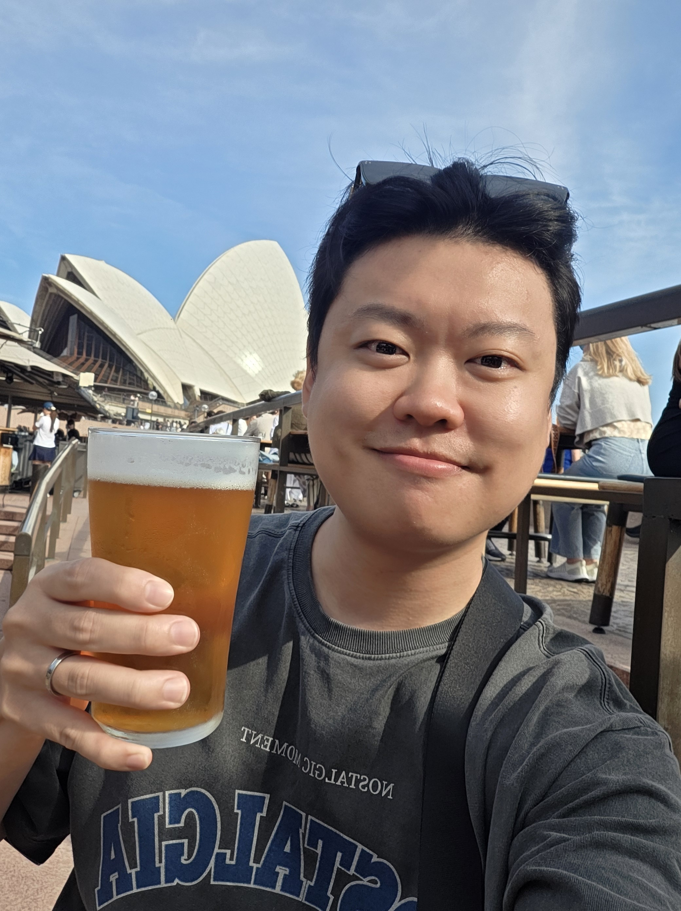

Seonghan Jang, Ph.D.
Infectious Disease Research Center,
Korea Research Institute of Bioscience and Biotechnology (KRIBB), Daejeon, Korea
My research centers on how the microbiome shapes host health and disease across diverse systems. Using mammalian and human-associated models, I study how gut microbial communities drive infection, inflammation, and disease. In parallel, my ongoing work on insect–microbe and plant–microbe symbiosis continues to illuminate the fundamental principles of host–microbe interactions.
About
I work at the Infectious Disease Research Center, Korea Research Institute of Bioscience and Biotechnology (KRIBB). My research centers on host–microbe interactions, with a focus on how the gut microbiome shapes host immunity, physiology, and disease.
I earned my Ph.D. at Hokkaido University, Japan, as a Japan Society for the Promotion of Science (JSPS) Doctoral Research Fellow, studying insect gut symbiosis, and later continued this work as a JSPS Postdoctoral Fellow at the National Institute of Advanced Industrial Science and Technology (AIST), Hokkaido Center.
My work spans mammalian, insect, and plant-associated microbiome systems, aiming to uncover microbial mechanisms that regulate host health, disease susceptibility, and biological function.
Education
Ph.D., Graduate School of Agriculture, Hokkaido University, Sapporo, Japan
M.S., Manufacturing Pharmacy, Pusan National University, Busan, Korea
B.S., Molecular and Life Science, Hanyang University ERICA, Ansan, Korea
Appointments
2024–present Sejong Science Fellow, Infectious Disease Research Center, Korea Research Institute of Bioscience and Biotechnology (KRIBB), Daejeon, Korea
2023–2024 Postdoctoral Researcher, Infectious Disease Research Center, Korea Research Institute of Bioscience and Biotechnology (KRIBB), Daejeon, Korea
2021–2023 Postdoctoral Researcher, Division of Life Sciences, Korea Polar Research Institute (KOPRI), Incheon, Korea
2021 JSPS Postdoctoral Research Fellow, Microbial Ecology & Engineering Research Group, National Institute of Advanced Industrial Science and Technology (AIST), Sapporo, Japan
2019–2021 JSPS Doctoral Research Fellow, Hokkaido University, Sapporo, Japan
Grants
Sejong Science Fellowship
Holo-omics approach to deciphering insect–symbiont–plant interactions. ₩105,210,000/year for 3+2 years.
Holo-omics approach to deciphering insect–symbiont–plant interactions. ₩105,210,000/year for 3+2 years.
JSPS Research Fellowship (PD)
Homeobox-gene-driven dramatic morphological change of the insect gut induced by gut bacteria. ¥5,544,400/year for 2 years.
Homeobox-gene-driven dramatic morphological change of the insect gut induced by gut bacteria. ¥5,544,400/year for 2 years.
JSPS Research Fellowship (DC2)
Molecular basis underlying the endosymbiosis between insects and bacteria. ¥3,300,000/year for 2 years.
Molecular basis underlying the endosymbiosis between insects and bacteria. ¥3,300,000/year for 2 years.
Joint Usage / Collaborative Research Grant
Diversity and evolution of the gut symbiotic system in stinkbugs. Tropical Biosphere Research Center, University of the Ryukyus.
Diversity and evolution of the gut symbiotic system in stinkbugs. Tropical Biosphere Research Center, University of the Ryukyus.
Awards
2025Outstanding Postdoctoral Researcher Award, Korea Research Institute of Bioscience and Biotechnology (KRIBB)
2025Travel Award, International Society for Molecular Plant-Microbe Interactions
2023Oral Presentation Award, The Korean Society of Applied Entomology
2023Poster Presentation Award, The Korean Society of Plant Pathology
2021Best Poster Presentation Award, 23rd Japanese Society of Evolutionary Studies
2021Poster Presentation Award, 65th Japanese Society of Applied Entomology & Zoology
2019Excellence English Oral Presentation Award, 21st Japanese Society of Evolutionary Studies
2018Best Thesis Award, Pusan National University
2017Best Oral Presentation Award, The Korean Society of Applied Entomology
2016Academic Excellence Award, Hanyang University
Invited Talks
2024Riptortus pedestris: an emerging model system for studying insect–microbe symbiotic associations. Early-Career Scientist Seminar, School of Biological Sciences, Seoul National University, Korea.
2024Riptortus pedestris — the emerging model system for studying insect–microbe symbiotic associations. School of Biological Sciences, Seoul National University, Korea.
2023Bean bug — an emerging model system for studying insect–bacteria symbiosis. Infectious Disease Research Center, KRIBB, Daejeon, Korea.
2022Riptortus pedestris — an emerging model system for studying insect–microbe symbiotic associations. Korea Polar Research Institute, Incheon, Korea.
2021Riptortus pedestris — an emerging model system for studying insect–microbe symbiotic associations. Annual Meeting of the Korea Society for Parasitology and Tropical Medicine (online).
2020Bean bug: an emerging model system for studying insect–microbe symbiotic associations. School of Medicine, Kyungpook National University, Daegu, Korea.
2019Understanding of insect–bacteria symbioses. Institute of Integrative Biology of the Cell, CNRS, Gif-sur-Yvette, France.
2018Dual Oxidase (Duox) as a pivotal symbiosis factor in bean bug–Burkholderia symbiosis. Tropical Biosphere Research Center, University of the Ryukyus, Okinawa, Japan.
Oral Presentations
2023Trojan horse in insect–microbe symbiosis. 2023 Annual Meeting of the Korean Society of Applied Entomology, Pyeongchang, Korea.
2022Break the barrier: ingested soil bacteria breach gut epithelia and stimulate humoral and cellular immunity in Riptortus pedestris. 10th Congress of the International Symbiosis Society, Lyon, France.
2019Host–symbiont specificity is determined by microbe–microbe competition in an insect gut. 2019 Annual Meeting of the Korean Society of Applied Entomology, Pyeongchang, Korea.
2019DUOX determines insect gut symbiosis by stabilizing respiratory network. 21st Annual Meeting of the Japanese Society of Evolutionary Studies, Sapporo, Japan.
2019Gut symbionts control the respiratory network in an insect. 63rd Annual Meeting of the Japanese Society of Applied Entomology and Zoology, Tsukuba, Japan.
2017PhaR, a negative regulatory protein of PhaP, modulates colonization of Burkholderia gut symbiont. 2017 Annual Meeting of the Korean Society of Applied Entomology, Gyeongju, Korea.
2017Pseudomonas entomophila kills host insect Riptortus pedestris via secretion of insecticidal protein AprA. 2017 PNU-AIST Global Research Laboratory Annual Meeting, Busan, Korea.
Poster Presentations
2026The "Black Spot" microbiota: specific gut commensals drive sepsis lethality by orchestrating early cytokine storms. ASM Microbe.
2025A Trojan horse cheater in the insect gut. 2025 Annual Meeting of the Microbiological Society of Korea.
2025Rhizosphere Burkholderia reduces methane emissions by enriching methanotrophs. 20th International Congress of the ISMPMI.
2024Rhizosphere Burkholderia mitigates methane emissions by promoting methanotrophs. 14th Asian Symposium on Microbial Ecology, Cheongju, Korea.
2024A hidden player of defensive symbiosis: ingested soil bacteria breach gut epithelia and prime systemic immunity in Riptortus pedestris. 27th International Congress of Entomology, Kyoto, Japan.
2024Ingested soil bacteria breach gut epithelia and prime systemic immunity without pathogenic effects. 39th Annual Meeting of the International Society of Chemical Ecology, Prague, Czechia.
2023Intestinal Enterococcus population affects Galleria mellonella metamorphosis. 2023 Annual Meeting of the Korean Society of Applied Entomology, Pyeongchang, Korea.
2023BREAK THE BARRIER! Ingested soil bacteria breach gut epithelia and stimulate systemic immunity in Riptortus pedestris. 50th Annual Meeting of the Korean Society for Microbiology and Biotechnology, Gyeongju, Korea.
2023Symbiont-like cheater genocides a pest insect. Annual Meeting of the Korean Society of Plant Pathology, Gyeongju, Korea.
2022The structure and core member of bacteriobiome in polar lichens. 10th Congress of the International Symbiosis Society, Lyon, France.
2022Lichen microbiome of the polar region is structured by mycobiont and environmental factors. 12th Asian Symposium on Microbial Ecology, Jeju, Korea.
2021Amazing morphological change of symbiotic organ: Homeobox gene is key! 23rd Annual Meeting of the Japanese Society of Evolutionary Studies (online).
2021Amazing morphological change of symbiotic organ: Homeobox gene is key! 65th Annual Meeting of the Japanese Society of Applied Entomology & Zoology (online).
2020Duox determines insect gut symbiosis by stabilizing respiratory network. 64th Annual Meeting of the Japanese Society of Applied Entomology & Zoology, Nagoya, Japan.
2019Gut commensal bacteria contribute to insect healthcare by immune enhancement. 2019 Annual Meeting of the Korean Society of Applied Entomology, Pyeongchang, Korea.
2018Dual Oxidase (Duox) is pivotal to maintain the bean bug–Burkholderia gut symbiosis. 46th Naito Conference, Sapporo, Japan.
2017PhaR protein regulates colonization of Burkholderia gut symbiont in the midgut of the host insect. 2017 Gordon Conference: Animal–Microbe Symbioses, Vermont, USA.
2016PhaR related to regulation of PHA surface protein affects colonization of Burkholderia gut symbiont. 2nd Asian Invertebrate Immunity Symposium, Hangzhou, China.
Research
My research focuses on how microbiomes regulate host physiology, immunity, and disease. I am especially interested in identifying microbial communities and microbial factors that shift host immune responses toward protection or pathology, with the goal of developing microbiome-based strategies for disease prevention and immune modulation.
Gut microbiome, immunity, and disease
My current work investigates how the gut microbiome shapes host physiology and inflammatory disease susceptibility. Using mammalian models, I study microbiome-driven mechanisms involved in sepsis, colitis, and colorectal cancer, including how specific gut commensals can trigger TLR4-dependent hyperinflammatory responses during bacterial infection. This research aims to define how microbiota-derived signals regulate innate immunity and host physiology, and how these mechanisms can be used for microbiome-guided disease prevention.
Insect–microbe gut symbiosis
I study the bean bug Riptortus pedestris–Caballeronia symbiosis as a model for environmentally acquired gut symbiosis. My work examines how insect hosts select, accommodate, and control beneficial bacteria within specialized gut tissues, and how bacterial symbiosis factors enable colonization, persistence, and functional maintenance of the association. This research provides a mechanistic framework for understanding how stable host–microbe partnerships are established and regulated.
Plant–microbe interactions
I also study plant–microbe and rhizosphere interactions related to plant immunity, pathogen control, and environmental adaptation.
Publications
* co-first author † corresponding author
Polyethylene and polystyrene oxidation by host and microbial oxidoreductases in Zophobas atratus 2026
Journal of Advanced Research
A Muribaculaceae-enriched microbiota exacerbates TLR4-dependent Acinetobacter baumannii-induced hyperinflammatory sepsis 2026 ★ 한빛사 ★ 뉴스 ★ KRIBB 성과
Nature Communications
A Trojan horse pathogen breaking through partner choice barriers in the insect gut 2026 ★ 한빛사 ★ AIST Press release
PNAS, 123(18), e2533244123
Digital twins for plant–microbe interactions: gap finding and filling 2026 ★ 한빛사
Plant Communications, 101871
Soil pH as an external filter shaping insect-microbe gut symbiosis 2026 ★ AIST Press release
Microbiome, 14, 129
Innate immune priming by n-dodecyl-β-D-maltoside in murine models of bacterial and viral infection 2026 ★ 한빛사 ★ 뉴스 ★ KRIBB 성과
EBioMedicine, 124
Dual functionality of Peribacillus frigoritolerans in methane mitigation and rice immunity 2025
Plant Stress, 101174
Beyond reductionism: the emerging holistic paradigm in indirect control of pathogen infection 2025
Frontiers in Microbiology, 16, 1638634
A new role for an old actor: plant small RNAs orchestrate the phytobiome 2025
ISME Communications, ycaf060
Enzymatic oxidation of polyethylene by Galleria mellonella intestinal cytochrome P450s 2024
Journal of Hazardous Materials, 480, 136264
Novel weapon-aided plant protection in the underground battlefield 2024
Plant Signaling & Behavior, 19(1), 2404808
Plant-induced bacterial gene silencing: a novel control method for bacterial wilt disease 2024
Frontiers in Plant Science, 5, 1411837
Hundreds of antimicrobial peptides create a selective barrier for insect gut symbionts 2024
PNAS, 121(25), e2401802121
Ingested soil bacteria breach gut epithelia and prime systemic immunity in an insect 2024 ★ PNAS highlight ★ 한빛사 ★ AIST Press release
PNAS, 121(11), e2315540121
Is plant acoustic communication fact or fiction? 2024 ★ 한빛사
New Phytologist, 242(5), 1876-1880
Frontiers in Plant Science, 14, 1279896
Hymenobacter canadensis sp. nov., isolated from freshwater of the pond in Cambridge Bay, Canada 2023
Int. Journal of Systematic and Evolutionary Microbiology, 73(6), 005913
Frontiers in Physiology, 13, 1071987
Microbial Ecology, 86, 1307-1318
Polymorphobacter megasporae sp. nov., isolated from an Antarctic lichen 2022
Int. Journal of Systematic and Evolutionary Microbiology, 72(9), 00553
Insecticide resistance by a host-symbiont reciprocal detoxification 2021 ★ 한빛사 ★ AIST Press release
Nature Communications, 12, 6432
Biology Letters, 18, 20200780
Dual oxidase enables insect gut symbiosis by mediating respiratory network formation 2021 ★ 한빛사 ★ AIST Press release
PNAS, 118(10), e2020922118
Re-opening of the symbiont sorting organ with aging in Riptortus pedestris 2020
Journal of Asia-Pacific Entomology, 23, 1089-1095
Impact of the insect gut microbiota on ecology, evolution, and industry 2020 ★ 한빛사
Current Opinion in Insect Science, 41, 33-39
The ISME Journal, 14, 1627-1638
Microbiology Resource Announcements, 9(10), e00041-20
Infection and Immunity, 87(12), e00674-19
Host-symbiont specificity determined by microbe-microbe competition in an insect gut 2019 ★ F1000 ★ 한빛사 ★ AIST Press release
PNAS, 116(45), 22673-22682
Developmental & Comparative Immunology, 81, 116-126
The roles of antimicrobial peptide, rip-thanatin, in the midgut of Riptortus pedestris 2017
Developmental & Comparative Immunology, 78, 83-90
PhaR, a negative regulator of PhaP, modulates the colonization of a Burkholderia gut symbiont in the midgut of the host insect, Riptortus pedestris 2017 ★ AEM spotlight
Applied and Environmental Microbiology, 83(11), e00459-17
Developmental & Comparative Immunology, 69, 12-22
No matching publications.
→ Full list of all 33 publications on Google Scholar
Book Chapter
Chemical Dialogues Between Plants and the Rhizosphere Microbiome 2026
The Microbiome (Vol. 1-6), CRC Press, In Press
News
2026.06PosterPresented at ASM Microbe 2026 on gut commensals driving sepsis lethality via early cytokine storms.
2026.05Co-author Our paper, “Polyethylene and polystyrene oxidation by host and microbial oxidoreductases in Zophobas atratus,” was published in Journal of Advanced Research.
2026.05Co-author Our paper, “Soil pH as an external filter shaping insect-microbe gut symbiosis,” was published in Microbiome. ★ AIST Press release
2026.04Co-first author Our paper, “A Trojan horse pathogen breaking through partner choice barriers in the insect gut,” was published in PNAS. ★ 한빛사 ★ AIST Press release
2026.04Co-first author Our paper, “A Muribaculaceae-enriched microbiota exacerbates TLR4-dependent A. baumannii-induced hyperinflammatory sepsis,” was published in Nature Communications. ★ 한빛사 ★ 뉴스 ★ KRIBB 성과
2026.04Co-first author Our paper, “Digital twins for plant–microbe interactions: gap finding and filling,” was published in Plant Communications. ★ 한빛사
2026.02Co-author Our paper, “Innate immune priming by n-dodecyl-β-D-maltoside in murine models of bacterial and viral infection,” was published in EBioMedicine. ★ 한빛사 ★ 뉴스 ★ KRIBB 성과
2025.12AwardReceived the Outstanding Postdoctoral Researcher Award, Korea Research Institute of Bioscience and Biotechnology (KRIBB).
2025.12Co-author Our paper, “Dual functionality of Peribacillus frigoritolerans in methane mitigation and rice immunity,” was published in Plant Stress.
2025.10PosterPresented at the 2025 Annual Meeting of the Microbiological Society of Korea on a Trojan horse cheater in the insect gut.
2025.09First author Our paper, “Beyond reductionism — the emerging holistic paradigm in indirect control of pathogen infection,” was published in Frontiers in Microbiology.
2025.07PosterAwardPresented “Rhizosphere Burkholderia enriching methanotrophs to reduce methane emissions” at the 20th International Congress of the ISMPMI, receiving a Travel Award.
2025.04First author Our paper, “A new role for an old actor — plant small RNAs orchestrate the phytobiome,” was published in ISME Communications.
2024.11Invited talkGave an invited talk on Riptortus pedestris as an emerging model system at the Early-Career Scientist Seminar, School of Biological Sciences, Seoul National University, Korea.
2024.10Co-author Our paper, “Enzymatic oxidation of polyethylene by Galleria mellonella intestinal cytochrome P450s,” was published in Journal of Hazardous Materials.
2024.10Invited talkGave an invited talk on Riptortus pedestris as an emerging model system at the School of Biological Sciences, Seoul National University, Korea.
2024.09First author Our paper, “Novel weapon-aided plant protection in the underground battlefield,” was published in Plant Signaling & Behavior.
2024.09PosterPresented at the 14th Asian Symposium on Microbial Ecology, Cheongju, Korea, on rhizosphere Burkholderia and methane mitigation.
2024.08Co-first author Our paper, “Plant-induced bacterial gene silencing — a novel control method for bacterial wilt disease,” was published in Frontiers in Plant Science.
2024.08PosterPresented at the 27th International Congress of Entomology (ICE 2024), Kyoto, Japan, on ingested soil bacteria priming systemic immunity.
2024.07PosterPresented at the 39th Annual Meeting of the ISCE, Prague, Czechia, on ingested soil bacteria priming systemic immunity.
2024.06Co-author Our paper, “Hundreds of antimicrobial peptides create a selective barrier for insect gut symbionts,” was published in PNAS.
2024.05Started as a Sejong Science Fellow (Principal Investigator) at the Infectious Disease Research Center, KRIBB.
2024.03First / corresponding author Our paper, “Ingested soil bacteria breach gut epithelia and prime systemic immunity in an insect — selected as a highlight and featured in a commentary,” was published in PNAS. ★ 한빛사 ★ AIST Press release
2024.02Co-first author Our paper, “Is plant acoustic communication fact or fiction?,” was published in New Phytologist. ★ 한빛사
2023.10First author Our paper, “History of a model plant growth-promoting rhizobacterium, Bacillus velezensis GB03,” was published in Frontiers in Plant Science.
2023.10OralAwardGave an oral presentation, “Trojan horse in insect–microbe symbiosis,” at the Annual Meeting of the Korean Society of Applied Entomology, Pyeongchang, Korea, receiving an Oral Presentation Award.
2023.06Co-author Our paper, “Hymenobacter canadensis sp. nov,” was published in Int. J. of Systematic and Evolutionary Microbiology.
2023.06PosterPresented “Ingested soil bacteria stimulate systemic immunity” at the Korean Society for Microbiology and Biotechnology (50th Annual Meeting), Gyeongju, Korea.
2023.04PosterAwardPresented “A symbiont-like cheater genocides a pest insect” at The Korean Society of Plant Pathology, Gyeongju, receiving a Poster Presentation Award.
2023.02Joined the Infectious Disease Research Center, KRIBB, as a Postdoctoral Researcher.
2023.01First / corresponding author Our paper, “Symbiont coordinates stem cell proliferation, apoptosis, and morphogenesis of the gut symbiotic organ,” was published in Frontiers in Physiology.
2023.01Invited talkGave an invited talk, “Bean bug — an emerging model system for studying insect–bacteria symbiosis,” at the Infectious Disease Research Center, KRIBB, Daejeon, Korea.
2022.09Corresponding author Our paper, “Obligate gut symbiotic association with Caballeronia in the mulberry seed bug,” was published in Microbial Ecology.
2022.09Co-author Our paper, “Polymorphobacter megasporae sp. nov., from an Antarctic lichen,” was published in Int. J. of Systematic and Evolutionary Microbiology.
2022.07OralGave an oral presentation, “Break the barrier — ingested soil bacteria breach gut epithelia and stimulate immunity,” at the 10th Congress of the International Symbiosis Society, Lyon, France.
2022.07PosterPresented work on the bacteriobiome of polar lichens at the 10th Congress of the International Symbiosis Society, Lyon, France.
2022.04PosterPresented work on the bacteriobiome of polar lichens at the 12th Asian Symposium on Microbial Ecology, Jeju, Korea.
2022.01Invited talkGave an invited talk on Riptortus pedestris as an emerging model system at the Korea Polar Research Institute, Incheon, Korea.
2021.11Joined the Korea Polar Research Institute (KOPRI) as a Postdoctoral Researcher.
2021.11Co-first author Our paper, “Insecticide resistance by a host–symbiont reciprocal detoxification,” was published in Nature Communications. ★ 한빛사 ★ AIST Press release
2021.10Invited talkGave an invited talk on Riptortus pedestris as an emerging model system at the Korea Society for Parasitology and Tropical Medicine (online).
2021.08PosterAwardPresented “Amazing morphological change of the symbiotic organ (Homeobox gene)” at the 23rd Japanese Society of Evolutionary Studies, receiving a Best Poster Presentation Award.
2021.03PosterAwardPresented “Amazing morphological change of the symbiotic organ (Homeobox gene)” at the 65th Japanese Society of Applied Entomology & Zoology, receiving a Poster Presentation Award.
2021.03Co-first author Our paper, “Insecticide resistance governed by gut symbiosis in a rice pest, Cletus punctiger,” was published in Biology Letters.
2021.03First author Our paper, “Dual oxidase enables insect gut symbiosis by mediating respiratory network formation,” was published in PNAS. ★ 한빛사 ★ AIST Press release
2021.03Completed Ph.D. at Hokkaido University, Sapporo, Japan.
2020.09First / corresponding author Our paper, “Re-opening of the symbiont sorting organ with aging in Riptortus pedestris,” was published in J. of Asia-Pacific Entomology.
2020.06First author Our paper, “Impact of the insect gut microbiota on ecology, evolution, and industry,” was published in Current Opinion in Insect Science. ★ 한빛사
2020.05Invited talkGave an invited talk, “Bean bug — an emerging model system,” at the School of Medicine, Kyungpook National University, Daegu, Korea.
2020.03PosterPresented “Duox determines insect gut symbiosis by stabilizing the respiratory network” at the 64th Annual Meeting of the JSAEZ, Nagoya, Japan.
2020.03Co-author Our paper, “Burkholderia insecticola triggers midgut closure in the bean bug — recommended by F1000,” was published in The ISME Journal.
2020.03Co-author Our paper, “Complete genome sequence of Burkholderia sp. strain THE68,” was published in Microbiology Resource Announcements.
2019.12Invited talkGave an invited talk, “Understanding of insect–bacteria symbioses,” at the Institute of Integrative Biology of the Cell, CNRS, Gif-sur-Yvette, France.
2019.11Co-author Our paper, “Particulate state of the cell envelope in Staphylococcus aureus and host defense responses,” was published in Infection and Immunity.
2019.10Co-first author Our paper, “Host–symbiont specificity determined by microbe–microbe competition — recommended by F1000,” was published in PNAS. ★ 한빛사 ★ AIST Press release
2019.10OralGave an oral presentation on host–symbiont specificity at the Korean Society of Applied Entomology annual meeting, Pyeongchang, Korea.
2019.10PosterPresented “Gut commensal bacteria contribute to insect healthcare by immune enhancement” at the Korean Society of Applied Entomology, Pyeongchang, Korea.
2019.08OralAwardGave an oral presentation on DUOX and the respiratory network at the 21st Japanese Society of Evolutionary Studies (JSES), receiving an Excellence English Oral Presentation Award.
2019.04Awarded a JSPS Doctoral Research Fellowship (DC2) at Hokkaido University.
2019.03OralGave an oral presentation on gut symbionts and the respiratory network at the 63rd Japanese Society of Applied Entomology & Zoology (JSAEZ), Tsukuba, Japan.
2018.10Invited talkGave an invited talk, “Dual Oxidase (Duox) as a pivotal symbiosis factor in bean bug–Burkholderia symbiosis,” at the Tropical Biosphere Research Center, University of the Ryukyus, Okinawa, Japan.
2018.04Began Ph.D. studies at the Graduate School of Agriculture, Hokkaido University, Japan.
2018.02Completed M.S. at Pusan National University, Busan, Korea.
2018PosterPresented “Duox is pivotal to maintain the bean bug–Burkholderia gut symbiosis” at the 46th Naito Conference, Sapporo, Japan.
2018AwardBest Thesis Award, Pusan National University.
2017.11Co-first author Our paper, “Insecticidal activity of the metalloprotease AprA via suppression of host immunity,” was published in Developmental & Comparative Immunology.
2017.10OralAwardGave an oral presentation on PhaR-mediated colonization of Burkholderia gut symbiont at the Korean Society of Applied Entomology, receiving a Best Oral Presentation Award.
2017.09Co-first author Our paper, “The roles of antimicrobial peptide rip-thanatin in the midgut of Riptortus pedestris,” was published in Developmental & Comparative Immunology.
2017.07PosterPresented “PhaR regulates colonization of Burkholderia gut symbiont” at the Gordon Conference: Animal–Microbe Symbioses, Vermont, USA.
2017.05First author Our paper, “PhaR modulates colonization of a Burkholderia gut symbiont — selected as an AEM spotlight paper,” was published in Applied and Environmental Microbiology.
2017.04OralGave an oral presentation on AprA-mediated killing of the host insect at the PNU-AIST GRL Annual Meeting, Busan, Korea.
2016.12Co-author Our paper, “Gut symbiotic bacteria stimulate insect growth and egg production,” was published in Developmental & Comparative Immunology.
2016.10PosterPresented “PhaR affects colonization of Burkholderia gut symbiont” at the 2nd Asian Invertebrate Immunity Symposium, Hangzhou, China.
2016.03Began M.S. studies in Manufacturing Pharmacy at Pusan National University, Korea.
2016.02Graduated with a B.S. from Hanyang University ERICA, Ansan, Korea.
2016AwardAcademic Excellence Award, Hanyang University.